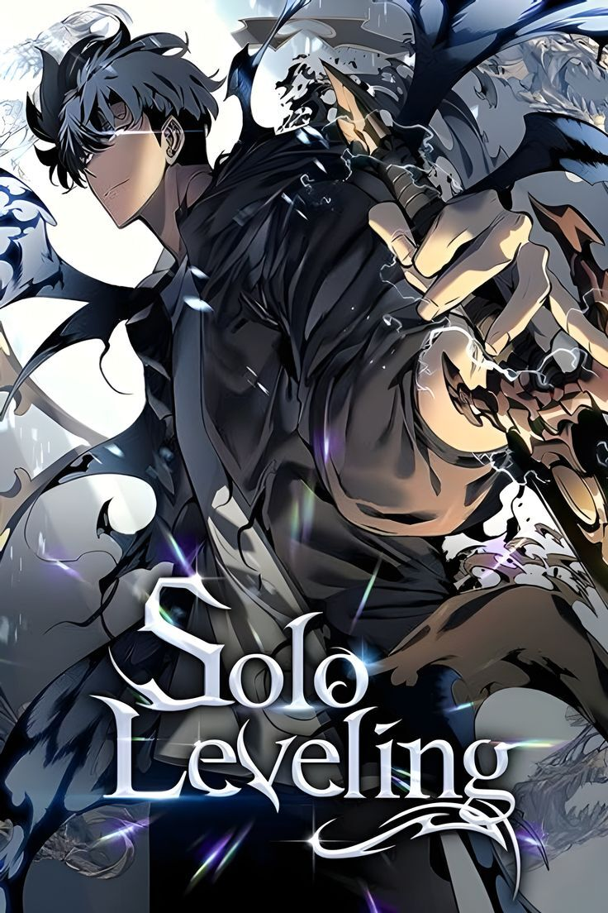
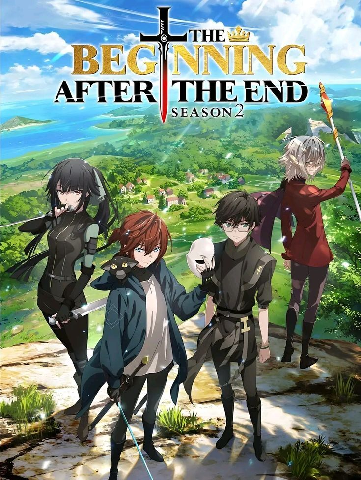
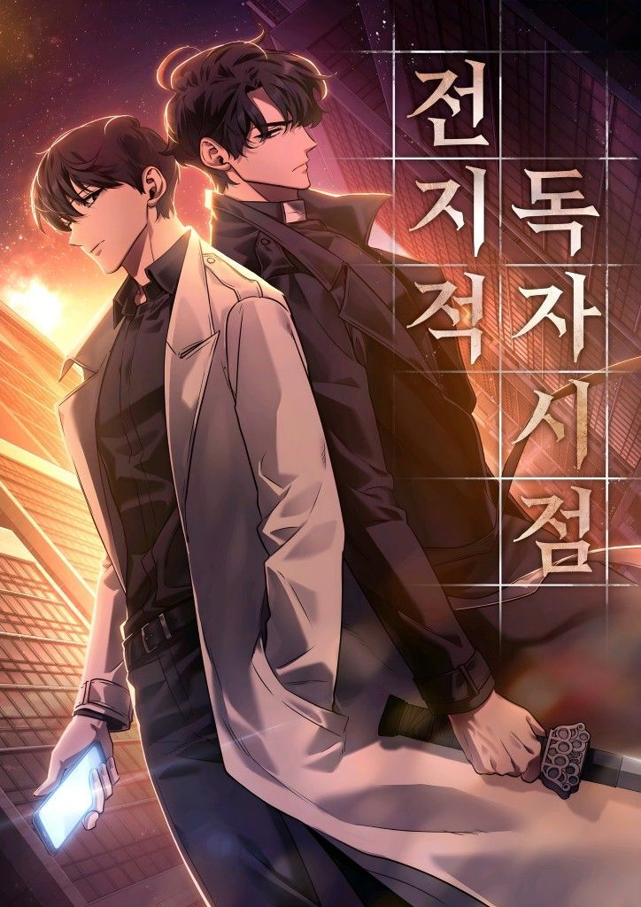

Daftar Manhwa dan Komik
Solo Leveling

Seorang hunter terlemah mendapatkan kemampuan untuk berkembang menjadi semakin kuat.
Chugong
Selesai
The Beginning After the End

Seorang raja bereinkarnasi ke dunia lain dan menjalani kehidupan baru dengan kekuatan sihir.
TurtleMe
Sedang Dibaca
Omniscient Reader

Seorang pembaca novel yang menjadi satu-satunya orang yang mengetahui akhir dari dunia.
Sing Shong
Sedang Dibaca
Daftar manhwa dan komik yang sedang atau sudah saya baca
| Judul |
Status |
Penulis |
| Solo Leveling |
Selesai |
Chugong |
| The Beginning After the End |
Sedang Dibaca |
TurtleMe |
| Omniscient Reader |
Sedang Dibaca |
Sing Shong |